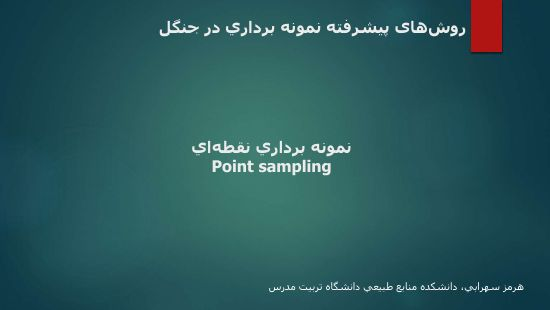
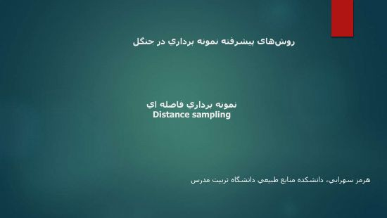
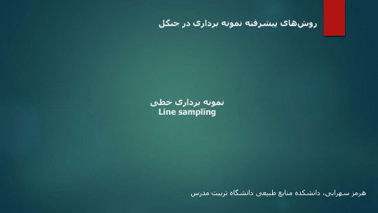
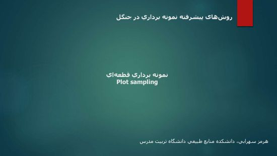

مقطع دکتری · علوم جنگل
روشهای پیشرفته
نمونهبرداری در جنگل
از مبانی نظری تا طراحی نمونه و اجرای میدانی؛ مجموعه اسلایدهای درس برای مطالعه و مرور مباحث نمونهبرداری جنگل.
دسترسی به اسلایدهای درس ↓درباره درس
پیوند نظریه، طراحی و عمل
این درس به مفاهیم و مبانی نمونهبرداری در جنگل، روشهای انتخاب نمونه و الگوهای استقرار نمونهها میپردازد. در کنار مباحث نظری، جلسات عملی به اجرای روشها و کاربرد Excel و GIS اختصاص دارند.
نقطهای و فاصلهایخطی و قطعهایالگوهای نمونهبرداریچندفازی و چندمرحلهای
منابع آموزشی
جلسات و اسلایدهای درس
اسلاید هر جلسه را در مرورگر ببینید یا برای مطالعه دانلود کنید.
کاربرد Excel در نظریه نمونهبرداری
تمرین عملی مفاهیم و محاسبات نمونهبرداری در Excel.

جلسه ۵
جلسه ۶اجرای میدانی روشهای نقطهای و فاصلهای
کاربرد عملی روشهای نقطهای و فاصلهای در جنگل.

جلسه ۸
جلسه ۹اجرای میدانی روشهای خطی و قطعهای
تمرین اجرای روشهای خطی و قطعهای در عرصه.
کاربرد GIS در الگوهای نمونهبرداری
تمرین طراحی و استقرار الگوهای نمونهبرداری در GIS.
جلسهای با این عبارت پیدا نشد. عبارت دیگری را جستوجو کنید.
مدرس درس
دکتر هرمز سهرابی
استاد گروه علوم جنگل
دانشکده منابع طبیعی، دانشگاه تربیت مدرس
ارتباط دانشگاهی
برای پرسشهای مرتبط با محتوای درس از ایمیل دانشگاهی استفاده کنید.
hsohrabi@modares.ac.ir ↗راهنمای استفاده
مطالعه، با دسترسی ساده
جلسه را پیدا کنید
جلسات به ترتیب آموزشی مرتب شدهاند. از جستوجو یا فیلتر نظری و عملی کمک بگیرید.
اسلایدها را مشاهده کنید
دکمه «مشاهده اسلایدها» فایل PDF را در زبانه جدید مرورگر باز میکند.
برای مرور ذخیره کنید
با گزینه «دانلود» فایل هر جلسه را ذخیره کنید. برای باز کردن فایلها میتوانید از نمایشگر PDF استفاده کنید.